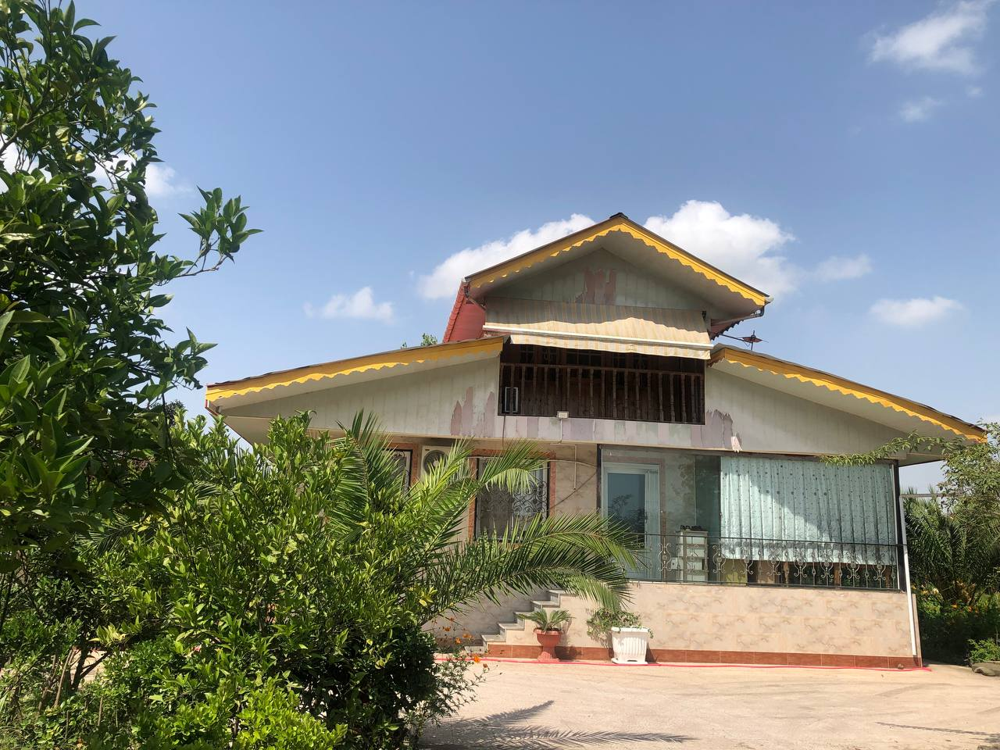
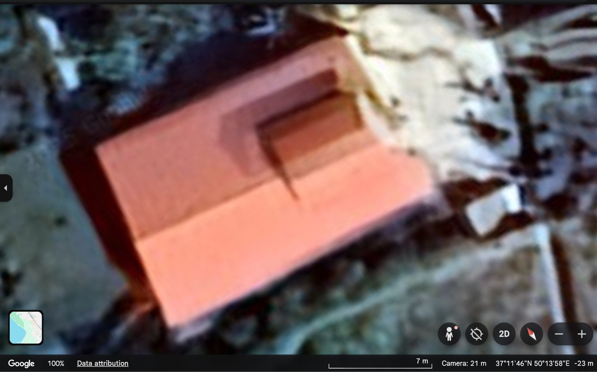

Inputs
EPSG:4326 (WGS84)
~120 m × 120 m
Facade (optional)

Mobile facade image
Provided by user (demo)
Provided by user (demo)
Design mock — buttons are disabled.
No JS
Design Only
Pilot
Facade View
Single‑storey dwelling with gable roof and barred windows (demo).

Overhead image (demo)
Roof area
Vegetation proximity
Facade cues
Results
Risk: Medium-High
Detected Attributes (demo)
- Roof shapeGable + dormer (90%)
- Roof materialMetal/corrug. (65%)
- Roof maintenanceIntact + no veg (70%)
- Stories1.5 (80%)
- Wall materialTile + panel (85%)
- Footprint shapeRectangular (85%)
- Footprint area~150 m² (70%)
- Trees within 5 mYes (90%)
- Neighborhood densityLow (80%)
- Elevation−23 m AMSL (95%)
- Coast proximityCaspian plain (70%)
- Addressvia reverse geocode
LLM‑style Explanation (demo)
Single-dwelling with a gable roof + dormer (90%). Roof shows paint wear, no vegetation (70%). Dense trees near facade (90%) raise debris impact risk. Site elevation is −23 m (below sea level), increasing flood vulnerability on the Caspian plain. Overall risk: Medium–High (±0.18).
What could make this home safer?
- Cut back nearby trees so branches don’t touch the walls or roof → less chance of storm damage.
- Strengthen the roof edges with straps or braces → roof stays firm in strong winds.
- Repaint and seal the roof panels → slows down wear and keeps water out.
- Prepare for floods by lifting electrical systems and using small barriers → reduces water damage.